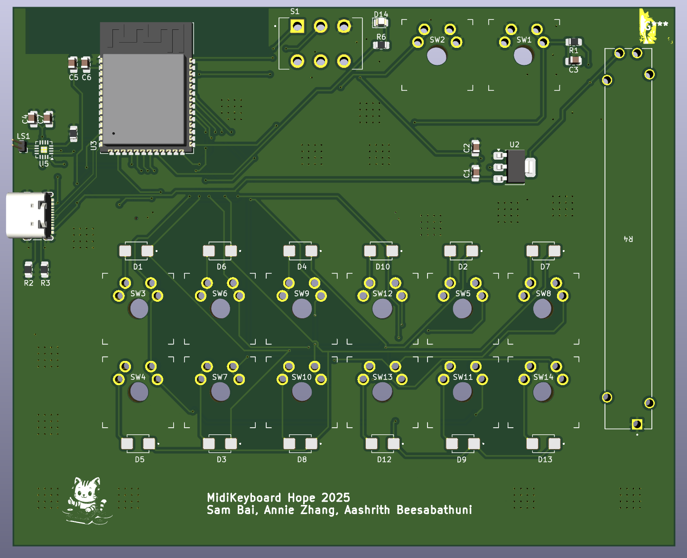
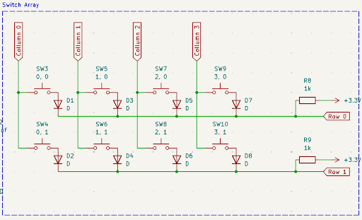
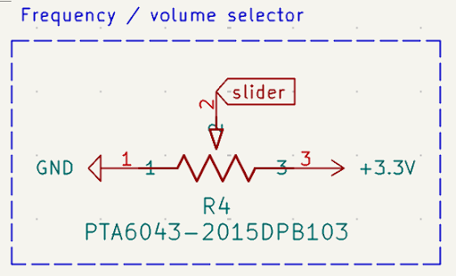
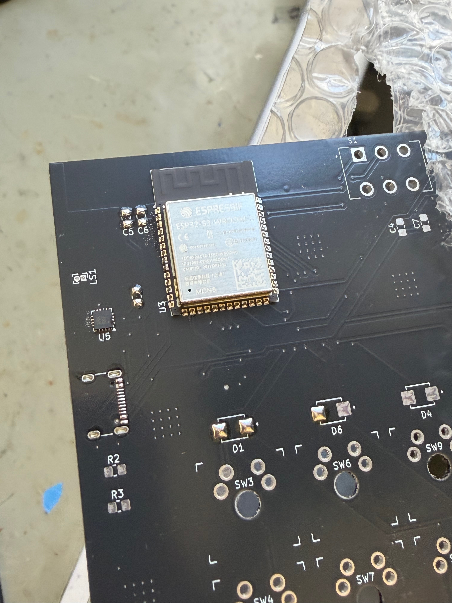
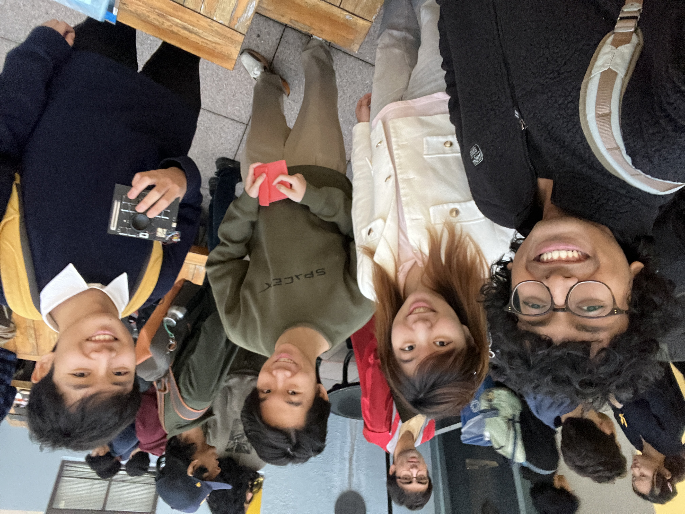

MIDI Keyboard Controller
HOPE PCB Design Final Project
Project Overview
This PCB design project was focused on the ideation, creation, and assembly of a MIDI (Musical Instrument Digital Interface) controller, with added functionality for playback and 'chopping.' As part of IEEE's HOPE (PCB Design) class, my team and I completed the entire board, from the layout to the soldering of components to create the final product. Our board would take multiple inputs, including button presses and a slider, translating them into musical notes that can be seen with a DAW (Digital Audio Workstation). We also added additional functionality (apart from MIDI workflow) by adding a microphone and a speaker, able to capture audio and playback on the controller.

Input / MIDI Mode
• 12 buttons map to note-on/note-off messages over USB MIDI, each routed to a DAW.
• A potentiometer and a knob send continuous controller changes (e.g., pan, reverb, filter) as MIDI CC messages.
• All inputs are debounced and translated into MIDI text messages for the host computer through USB communication.
Record / Playback Mode
• Button 1: start/stop recording from the mic (record LED indicator).
• Button 2: play back the recorded clip (play LED indicator).
• Mode switching keeps MIDI controls separate from audio capture to avoid conflicts.
• From there, rest of button functionality used to chop, playback, reverse etc audio clip, for vocal chopping effects. Processed locally

Design Approach
There were a few constraints we had in mind when designing. Primarily, budget and x/y space. We knew we wanted at least 12 input buttons (corresponding to 12 musical notes) along with some adjustment scale such as a slider. Because the limiting factor for space was the x/y that our switch array took up, packaging all the components was not too big of a challenge. Instead, our challenge came in ensuring that we would have good signal integrity in all our lines, especially power and the path from the microphone to the speaker (which uses an I2S communication protocol). We decided to use an ESP32, to be able to easily program our IC to both perform USB data outputs (for MIDI mode), and also the basic programming to manipulate recorded audio with the buttons and slider (for Record mode).
Schematic





Highlighted above are the main areas of the schematic. This consists of the ESP32 circuit, the button arrays (utilizing a row and column style input, where the ESP measures voltage across to detect button presses, allowing us to sample more buttons given less I/O pins) and the slider. Also shown is the status LED, which displays which operational mode the system is in. There is also the microphone data path, using I2S communication to best transmit mic data to be processed by the Arduino and the speaker output.
Layout

Outcome
We have successfully assembled our board, and presented it at the HOPE Final showcase, presenting to Apple Engineers. Our board worked as intented, able to enter "MIDI Mode" and connect to a DAW to function as an instrument. Our board was also able to enter "Record/Playback Mode", where we were able to use the onboard mic and I2S path to play, mix, and replay sounds to create some pretty sounds and beats. As one of the first boards I created, there was alot learned from the process, and I hope to take those lessons for more complex PCB design tasks in the future!


Media Gallery
